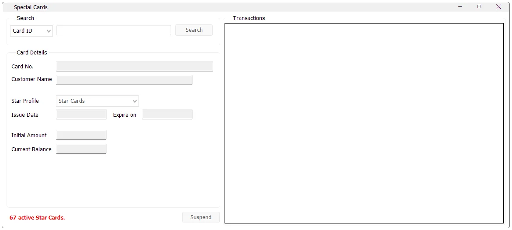

Special Cards
Special Cards maintains stored-value cards used by IMS. The screen lets an authorized user find a card, review its profile and balance, inspect its transaction history, and suspend or reactivate the card.

Find a card
- Enter the card number in the Search area.
- Click Search or press Enter while the search field is active.
- If the card exists, IMS loads its details and transaction history.
The card details show the Card No., linked Customer Name, Star Profile, Issue Date, optional Expiry Date, Initial Amount and Current Balance.
Transaction history
The Transactions area shows activity recorded against the selected card. The displayed columns include invoice date, store, invoice number, transaction type and amount.
Transaction types distinguish balance additions, balance refunds, refunds and sales so the user can see how the current card balance was built over time.
Create and activate a new card
If a searched card number does not exist and at least one Special Card Profile is available, IMS can ask whether you want to create and activate the new card.
A newly created card starts with zero initial amount and zero balance. Funding and customer assignment are then performed through the Sales Transaction workflow.
Suspend or reactivate a card
After loading a card, use Suspend to make an active card inactive. When an inactive card is loaded, the same button changes to Activate. IMS asks for confirmation before changing the status.
The bottom-left indicator shows the current number of active Special Cards.
Special Card Profiles
Profiles define the rules that apply to cards. Administrators maintain them separately in Manage → Special Cards Profiles.
Fund and spend a Star Card
Star Cards are stored value. Create an active card under a configured profile, then use Sales Transactions to fund it and associate the customer. A newly created card starts with zero initial amount and zero balance. The profile's funding Item Code must be its designated Service Item. Select Star Card and retrieve the card number; a new card can be created from this flow when offered by IMS.
Use a funding transaction for recharge. The first funding records the initial value and customer; later funding adds to the balance. When the profile has a recharge percentage, the credited amount is the funding transaction's net amount plus that amount multiplied by the configured percentage. Check both the receipt and the resulting balance.
For a merchandise purchase, retrieve the card and use its profile's linked payment method, alone or as part of Multiple Payments. The available balance must cover the card-paid portion. A card payment cannot pay for its own recharge item. POS rejects suspended and expired cards. A one-time-use card that has already been funded and has reached zero balance is rejected for a subsequent sale; this setting does not mean that the first partial purchase automatically consumes the whole balance.
Returns and transaction history
Complete returns against the original transaction and the correct card payment. A card-funded refund credits the corresponding card amount back; reversing a funding transaction reduces the funded amount. The card history records store, invoice, transaction type, date, customer and signed movement. Suspension controls future use and does not erase that history. Review the saved return and balance before attempting another action.
Star Card value is separate from Star Rewards points, Give Away vouchers and Special Offers cashback. Compare the six programs.